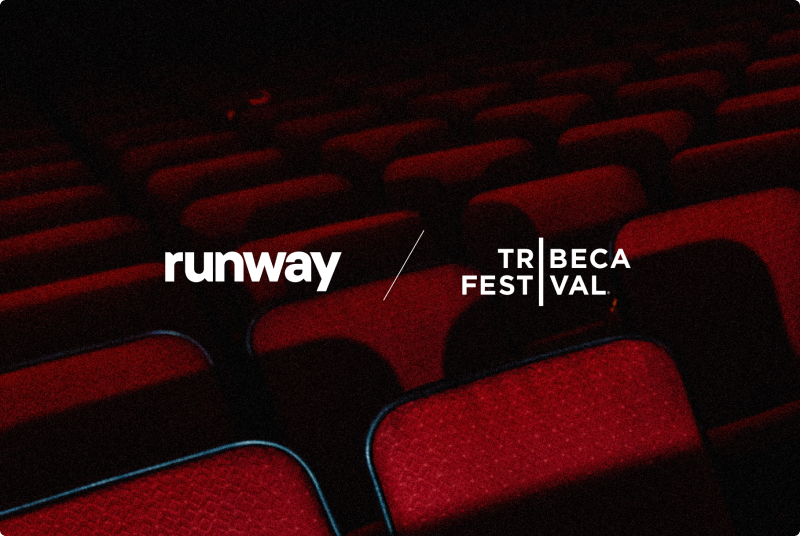

一、导语
2026 年 6 月 22 日，Runway 宣布其旗舰级 AI 视频编辑模型 Aleph 2.0 正式集成到 Figma Weave 平台中。这意味着视频编辑不再需要离开设计工具——用户可以直接在 Figma Weave 的画布上完成从视频剪辑到效果编辑的全流程操作。
这不是一次简单的「插件整合」。Aleph 2.0 带来了 30 秒 1080p 视频的上下文敏感编辑能力：设计师从视频中提取一帧，在 Figma 中修改该帧的视觉风格，Aleph 2.0 会自动将这一编辑「传播」到同一条视频中该物体出现的所有帧。这个过程被称为 「关键帧驱动的上下文编辑」——一次修改，全片更新。
二、背景分析：AI 视频编辑的演变之路
AI 视频编辑在短短 3 年 内经历了三次范式转变：
- 2023-2024 年（生成时代）：Runway Gen-1、Gen-2 等模型从零生成短视频，「文生视频」成为主流叙事。但生成的视频无法精确控制细节，创作者只能反复调整 prompt。
- 2025 年（编辑时代）：Aleph 1.0 的发布标志着「视频编辑优先」理念的落地。用户上传已有视频，用自然语言或画笔指定需要修改的区域和时间段。此时编辑仍需在 Runway 独立网页应用中完成，与主流设计工具之间存在明显的割裂。
- 2026 年（内嵌时代）：Aleph 2.0 与 Figma Weave 的集成，将 AI 视频编辑能力直接嵌入到设计师的日常工具中，实现了「创作和编辑在同一画布」的理想状态。
这一演变的驱动力来自两个方面。其一是视频内容消费的爆炸式增长——据 Cisco 数据，2026 年 全球互联网流量的 82% 将由视频构成。其二是 AI 模型的成熟：Aleph 2.0 采用了全新的 时序一致性 Transformer 架构，使得模型能够在理解视频中物体运动轨迹的基础上，精确控制每一帧的修改。
三、核心内容：Aleph 2.0 的技术突破与产品体验
关键帧编辑：从「逐帧修改」到「一次到位」
传统视频编辑软件（如 Premiere Pro、DaVinci Resolve）中的关键帧，本质上是人工设置的时间锚点——每一帧都需要艺术家手动调色或添加特效。Aleph 2.0 的革命性在于：
- 用户从视频中提取一帧作为「编辑参考帧」
- 在 Figma Weave 中对该帧进行设计修改（改变颜色、替换物体、调整构图等）
- Aleph 2.0 自动分析该物体在视频中的运动轨迹，将修改应用到每一帧
- 处理速度约为 2-5 秒 每帧（批处理模式），一条 30 秒 视频可在 60-150 秒 内完成全片编辑
这意味着过去需要 2-3 小时 的逐帧 masking 和 rotoscoping 工作，现在可以在 5 分钟 内完成。

多镜头一致性编辑
Aleph 2.0 的一个关键技术能力是 跨镜头编辑一致性。传统上，如果一段视频包含 10 个 不同机位切换的镜头，AI 模型往往会在镜头切换时丢失对被编辑物体的追踪，导致风格不一致——前一镜头的蓝色汽车，切换到下一镜头可能变回红色。Aleph 2.0 通过引入 基于 CLIP 嵌入的跨镜头特征匹配，在不同镜头之间建立了语义级映射关系，使得同一物体的视觉属性在镜头切换后仍然保持一致。
Weave 平台的优势
Figma Weave 是 Figma 于 2025 年 推出的 AI 原生设计平台。与 Figma 的矢量设计传统不同，Weave 是一个 节点式 工作流平台，用户通过拖拽不同的「AI 节点」来构建创意流程。Aleph 2.0 接入后，设计师可以将视频编辑节点与其他 AI 节点（如 Midjourney 风格的图像生成、Runway Gen-4 的文字生成视频、语音合成等）串联成一个完整的工作流。
具体来说，Aleph 2.0 节点接受 3 个 输入：原始视频、经过修改的关键帧、时间戳。输出是编辑后的完整视频。这个节点可以嵌入在更大流程中的任何位置——可以在图像生成节点之后、合成节点之前，也可以作为最终输出节点。
「Weave 上的 Aleph 2.0 不是 Runway 的附属品。它是一块乐高积木，可以和其他积木搭在一起，创造我们从未想象过的创意形式。」
四、各方反应
设计社区的反应：在 Figma Weave 官方社区中，Aleph 2.0 集成发布后 24 小时 内获得了超过 5000 条 讨论帖。一位叫「motion_design_dave」的用户分享了他的测试案例：一个包含 12 个 镜头切换的 45 秒 产品广告，使用 Aleph 2.0 将背景从白色替换为渐变金色，全程耗时 3 分 12 秒——而过去同样的工作使用 After Effects 至少需要 6 小时。
竞品动态：Adobe 于 2026 年 4 月 宣布将在 Premiere Pro 中加入 AI 视频编辑助手「Project Scenic」，支持基于文本的剪辑和 AI 驱动的视觉风格迁移。Canva 也在 2026 年 5 月 收购了 AI 视频初创公司 Neural Frames。AI 视频编辑工具正在成为所有设计平台争夺的焦点。
行业分析：Forrester 分析师 Mike Gualtieri 指出：「Aleph 2.0 与 Figma Weave 的集成标志着 AI 视频编辑从『独立工具』向『平台能力』的转变。未来 12-18 个月，我们将看到每一款主流设计工具都内置 AI 视频编辑能力——就像今天每一款设计工具都内置了图像编辑一样。」
「Aleph 2.0 真正聪明的地方在于它没有试图取代 Premiere Pro。它重新定义了『编辑』——不是时间线上的逐帧操作，而是画布上的创意决策。」
五、深度解读：这意味着什么？
对创作者的影响
对于独立创作者和小型工作室，Aleph 2.0 + Figma Weave 的组合可能意味着生产流程的彻底重塑。过去制作一条高质量产品视频需要：文案、设计、动画、剪辑、调色——至少 3-4 个 不同专业的人员。现在，一个懂设计的人就可以完成其中 80% 的工作，剩余的 20% 由 AI 填充。
这不一定意味着「裁员」——更可能的结果是「扩能」。一个设计师可以同时管理 3-4 个项目，每个项目的视频产出质量更一致、迭代速度更快。对于电商行业尤其明显：Aleph 2.0 支持快速替换视频中的产品颜色、包装，这意味着同一段视频素材可以生成十几种不同 SKU 的广告版本，而无需重新拍摄。
对传统视频软件的影响
Premiere Pro、Final Cut Pro、DaVinci Resolve 等传统 NLE（非线性编辑）软件面临着来自 AI 原生工具的最直接竞争。这些传统工具的优势在于精确的手动控制，但劣势也同样明显——学习曲线陡峭（掌握 Premiere Pro 需要 6-12 个月 的系统训练），且每次版本迭代带来的新功能大多是锦上添花而非范式革命。
相比之下，Aleph 2.0 的操作逻辑直观到「会截图就会剪辑」的程度。这背后的核心差异在于：传统 NLE 是「编辑过程导向」——用户需要学会操作软件的所有功能才能开始工作；AI 原生工具是「结果导向」——用户描述想要的结果，AI 补完所有中间步骤。
长期趋势预测
Runway 与 Figma 的合作可能只是开始。我们预计到 2027 年：
- AI 视频编辑将成为设计工具的标配功能，类似今天的「滤镜」
- 视频素材的「AI 可编辑性」将成为拍摄设备的一个考量指标——拍摄时就生成 AI 友好的元数据
- 跨平台工作流（Figma ↔ Runway ↔ 视频平台）将标准化，形成新的创作者基础设施
- AI 视频编辑的市场规模将从 2025 年的 35 亿美元 增长至 2028 年的 120 亿美元（来源：Gartner 预测）
六、总结
Aleph 2.0 登陆 Figma Weave，表面上看是一次产品集成，实质上是对「视频编辑」这一概念的重新定义——从专业工具中的技术工序，转变为设计画布上的创意延展。对于创作者而言，问题不再是「我要学哪个剪辑软件」，而是「我想做什么样的视频」。这个转变，可能比任何技术突破都更具革命性。